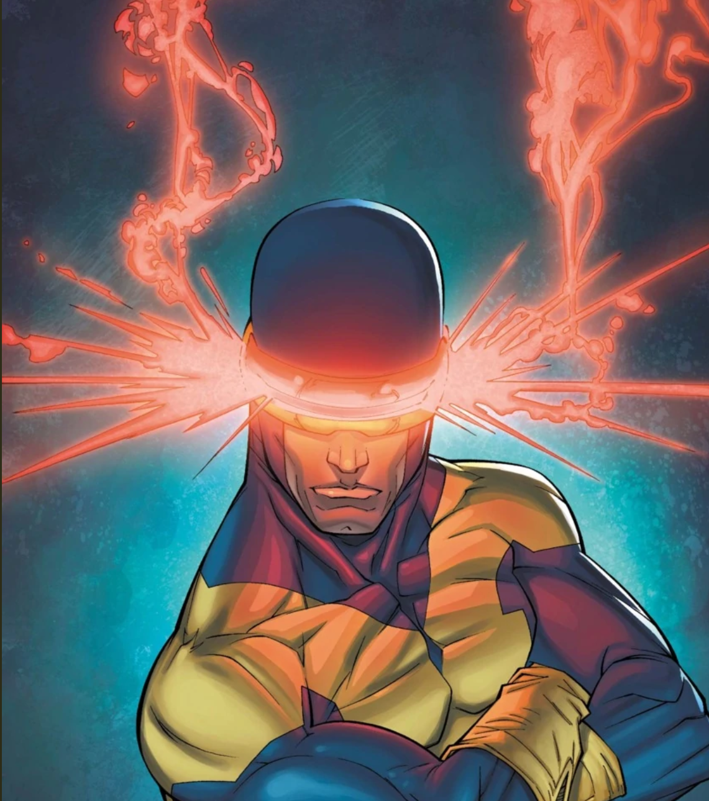
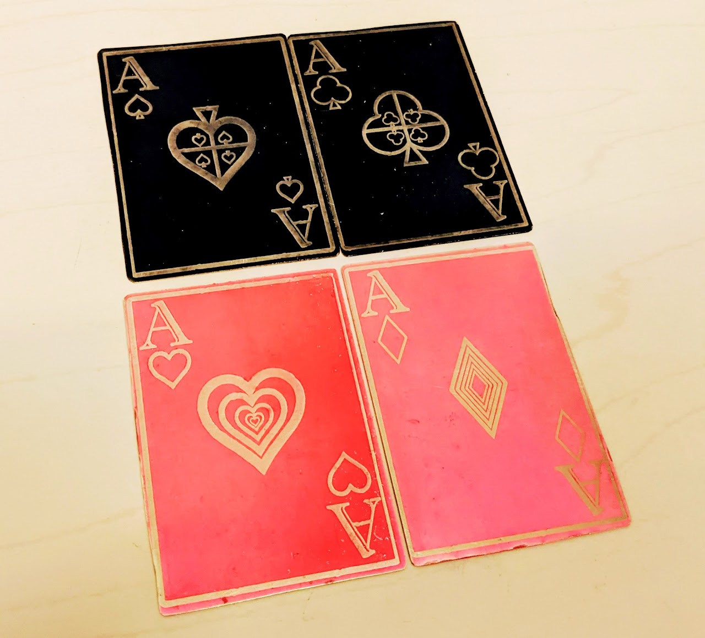

Lasers!
Laser equipment and materials are labeled RED!!!
FACULTY: Class assignments requiring laser cutting should be facilitated by LAs or TAs, or instructors.
STUDENTS: Assistance with laser cutting for class assignments should be facilitated by class LAs or TAs first, then "Lazor Wizards", if available.
EVERYBODY: *Laser cutter access is separate from general BTU access and REQUIRES AN ORIENTATION.*
Laser Cutter Orientations
The Laser Cutter Orientation schedule can be found on the BTU Lab Calendar.
Anyone can gain access to operate the laser cutter using the process described below.
Prior to that, schedule a time to complete your laser cutting job with one of the Lazor Wizards listed below, and on the BTU Mischief Makers page.

Equipment
- 75 Watt CO2 Laser, 30" x 18" bed size [762mm x 457mm]
- 75 Watt CO2 Laser, 40" x 28" bed size[1016mm x 711mm]
- Various Plywood
- Various Plastics
- Various Cardboard / Papers
- Various Fabrics
- ... and MORE!
Contact the BTU Lazor Wizards
Email all Lazor Wizards:
Subject must say: "Lazor Wizards"
Copy and paste these addresses:
TO GAIN FULL INDEPENDENT ACCESS TO LASER CUTTERS:
- Complete the laser cutter orientation. Calendar HERE.
- Class assignments, where you need assistance, are facilitated by LAs, TAs, and instructors first, then "Lazor Wizards", if available. (See above).
- As long as you need assistance, schedule laser appointments with a BTU Lazor Wizard listed below and on the BTU Mischief Makers page.
- Lazor Wizards provide "guided access". We will help you as much, or as little as needed.
- When you demonstrate independent and proper use of the laser cutter, you will have full access.
- Block 1-hour times on the whiteboard next to each laser. (Not during scheduled orientations.)